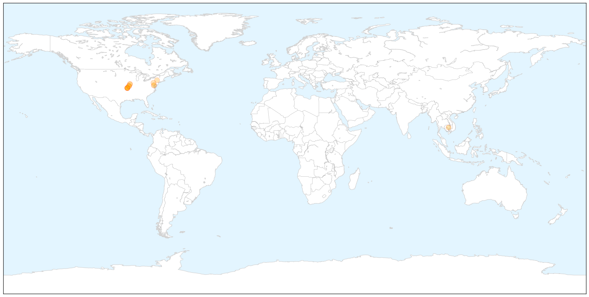
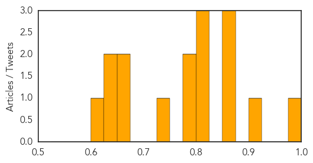
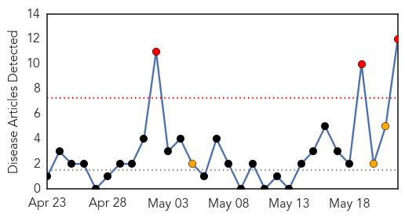
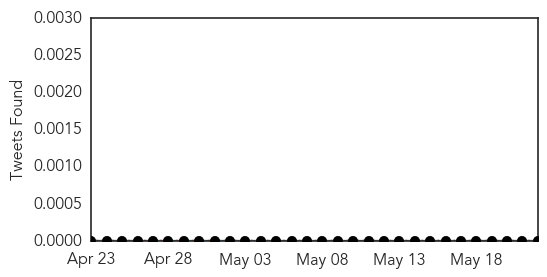
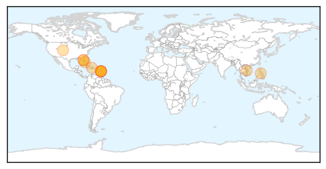
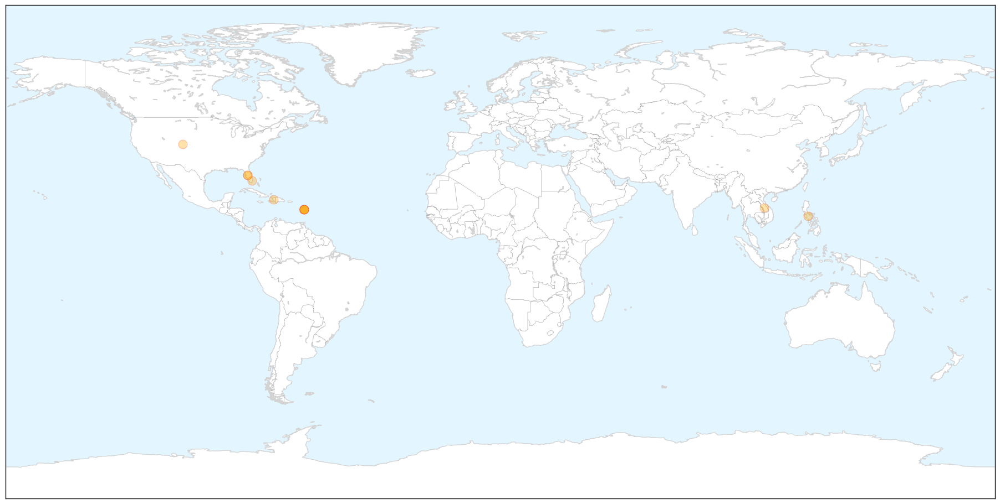
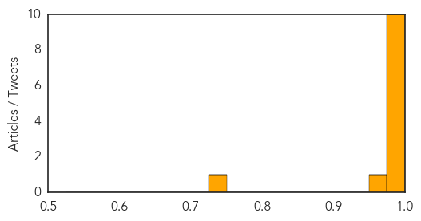

Hepatitis
30-Day Web Trend
3 alerts, 0 warnings

30-Day Twitter Trend
0 alerts, 0 warnings

Article Locations

X

Article Confidences
Top Articles:
- 0.979
- News Scan for May 22, 2014
- 0.902
- About 1,660 get hepatitis vaccine in first wave
- 0.870
- Burger worker may have exposed thousands to hepatitis
- 0.863
- World Health Assembly approves resolution on hepatitis and mechanism to coordinate noncommunicable disease response - World
- 0.850
- Up to 5,000 exposed to hepatitis A at Red Robin restaurant
- 0.820
- Sick worker at Red Robin in Missouri has exposed thousands to hepatitis A
- 0.816
- Burger worker may have exposed thousands to hepatitis
- 0.815
- Springfield Red Robin worker may have exposed thousands to hepatitis
- 0.798
- A Missouri Restaurant Exposes 5,000 People to Hepatitis A
- 0.783
- Thousands exposed to Hepatitis A at Springfield Red Robin restaurant
- 0.745
- Sick Red Robin Worker May Have Exposed As Many As 5,000 People To Hepatitis A
- 0.668
- Red Robin Employee May Have Exposed Thousands To Hepatitis A
- 0.666
- Restaurant patrons may have been exposed to hepatitis A
- 0.628
- Novartis presents key advances in cancer research at ASCO and EHA from four new pivotal studies in lung, blood and skin cancers
- 0.627
- Red Robin worker prompts Hepatitis A scare in Missouri
- 0.618
- Community Blood Center warns of Red Robin connection
Top Tweets:
-
No tweets found for May 22, 2014
Chikungunya
30-Day Web Trend
3 alerts, 3 warnings

30-Day Twitter Trend
0 alerts, 0 warnings

Article Locations

X

Article Confidences
Top Articles:
- 0.998
- Mosquito-Borne Breaking Bone Disease Spreads In Haiti
- 0.996
- Painful and rapid spread of new virus in Caribbean
- 0.995
- Painful and rapid spread of new virus in Caribbean
- 0.995
- Painful and rapid spread of new virus in Caribbean
- 0.994
- Painful and rapid spread of new virus in Caribbean; could be carried to U.S.
- 0.993
- Painful and rapid spread of new virus in Caribbean
- 0.990
- In advance of summer tourism, new virus rapidly spreading in Caribbean
- 0.989
- Painful virus rapidly overwhelming Caribbean: ‘It’s like everything is coming apart’
- 0.989
- Chikungunya Continues To Spread Across Caribbean; Only A Matter Of Time Before US Outbreak, Experts Say
- 0.984
- Caribbean chikungunya virus could hit tourism if it is not controlled
- 0.971
- Painful and rapid spread of new virus in Caribbean
- 0.742
- Chikungunya fever reported in Palm Beach County
Top Tweets:
-
No tweets found for May 22, 2014